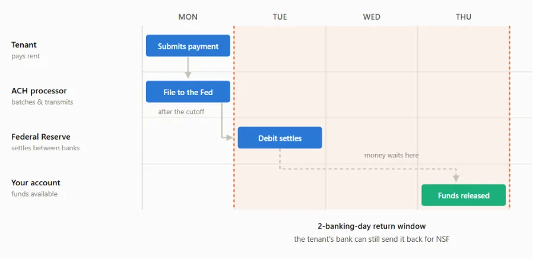
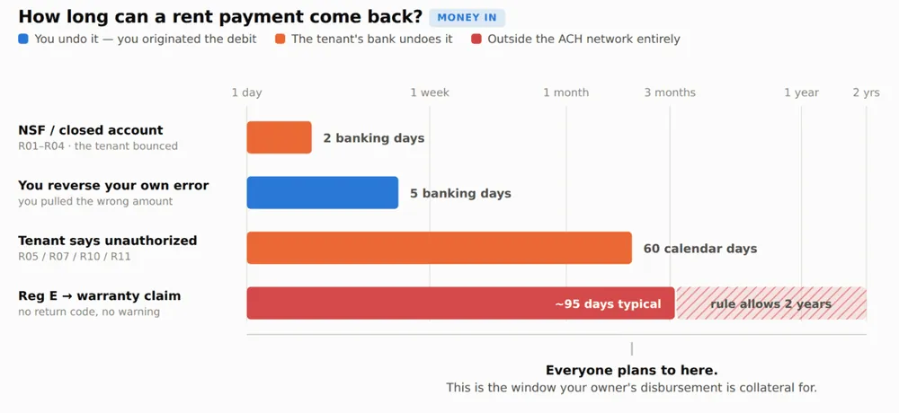
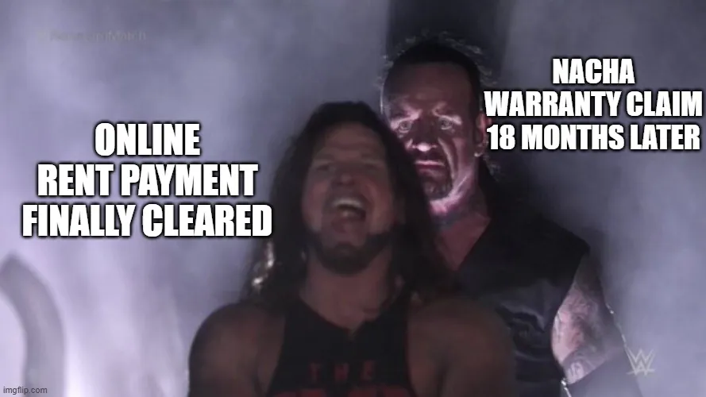
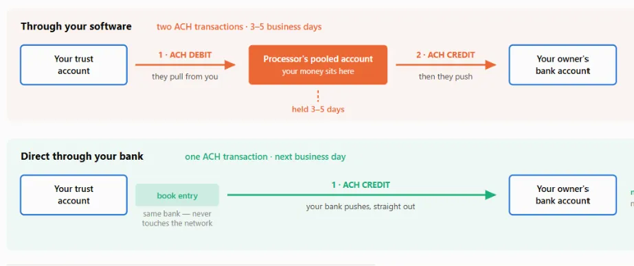

I ran owner disbursements on Monday. By Wednesday, three owners had emailed asking where their money was. One of them twice. I logged into the software and there was nothing to show them. No status, no ETA, no tracking number. The money was somewhere between our trust account and their checking account, and I genuinely had no idea where.
If you've run a PM company for more than a few months, you've lived some version of this. And if you've spent any time in PM operator forums, you've watched this exact conversation play out on a loop: someone complains about slow disbursements, someone else mentions "NACHA Files" like everyone's supposed to know what that means, and someone asks when we're finally getting Same-Day ACH. Buried in there is usually a much stranger question: how is a tenant sometimes able to claw back a rent payment months after it cleared?
I got tired of not having good answers, so I went and found them.
How Long Does a Tenant's Rent Payment Actually Take to Clear?
Start with the simpler case, because it sets up everything else. When a tenant pays rent by ACH, that payment settles in one to two business days. NACHA (the organization that writes the rulebook every ACH transaction in the country has to follow, including rent) gives the tenant's bank a two-business-day window to reverse it if something's wrong on their end.
One distinction that trips people up: Nacha and a "NACHA File" are not the same thing, despite sounding identical. Nacha is the rulemaking body. A NACHA File is a specific file format you can hand your bank to originate payments yourself, and it's one option for owner disbursements, which I'll get to below. Every ACH transaction, including tenant rent, operates under Nacha's rules. Almost none of them involve an actual NACHA File. Two words, easy to conflate, worth keeping straight.
So, one to two days to settle, two days for the bank-level reversal window. Take a look:

Sound good, right? Cleared easily within a week. But what’s going on when a tenant is able to reverse a payment 6 weeks or even 6 months later??? Check this out:

Two Clocks, Not One: Nacha's 60 Days vs. Regulation E's Real Deadline
The first clock is Nacha's own reversal rule for unauthorized charges: 60 days, starting from the settlement date. Straightforward enough.
The second clock comes from Regulation E, the federal consumer protection rule, and it doesn't start at settlement - it starts when the tenant's bank sends the statement that transaction shows up on. That gap matters more than it sounds like it should. A rent debit that settles August 1st might not appear on a statement until that billing cycle closes on August 31st, with the statement going out September 1st. The tenant then has roughly 60 days from that mailing to dispute it under Reg E, putting their real deadline around October 31st. Call it day 91 from the original settlement date. Not 60. Ninety-one.
That's how a "60-day rule" quietly becomes a 90-day window in practice, just from the mechanics of statement cycles.
Here's what actually happens once a tenant invokes Reg E:
The tenant tells their bank the debit was unauthorized.
Their bank investigates and reimburses the tenant directly. The tenant's bank is now out that money.
To get made whole, the tenant's bank files a breach-of-warranty claim against your bank, arguing your bank warranted the debit was properly authorized when it was originated.
Your bank pays the claim, then debits your account (because your origination agreement says they can).
That's four hops between "tenant calls their bank" and "money leaves your account," and you're not in the loop for most of them.
And there's a third window stacked on top of the first two: Nacha's warranty claim period runs a full two years from the settlement date on a consumer account. On top of that, there's a carve-out letting the tenant's bank reach any entry within 95 calendar days of the first unauthorized entry (even if that particular entry settled more than two years ago).
So the realistic range for property managers is: most reversals show up within 60 days of settlement, a smaller number stretch out under the Reg E statement-cycle math, and in rare cases, a claim can genuinely reach back up to two years.

That's not a scandal or a scam - it's just how consumer protection is built into the rail. But if you've ever been blindsided by a reversal on a tenant who moved out a year ago, now you know why it's structurally possible, not just a fluke.
How Owner Disbursements Actually Move: The Pull, the Hold, and the Push
Now the other side of the ledger: paying owners. This is where most of the "why is this taking so long" frustration lives, and it's also the part almost no PM software actually shows you.
When you disburse to an owner through your PM software's built-in ACH (ePay), the money does not go directly from your trust account to your owner's bank account. It makes a stop in the middle, at your software's payment processor. Two separate ACH transactions, not one:
The Pull. You approve the disbursement batch in your software. The processor originates an ACH debit against your trust account and pulls the funds out. Direction matters here — the processor is reaching into your account. You are not sending anything yourself.
The Hold. The pulled funds sit in the processor's account, typically a pooled "for benefit of" account holding money for every property manager on that platform, not just you. How long they sit there depends on the processor, the software, and (this is the part nobody advertises) their internal read on your company's credit risk.
The Push. Once the hold clears, the processor originates an ACH credit out to each owner's account. Credits settle overnight, which is why this leg feels fast even when the whole process doesn't.
The asymmetry is the whole story: a debit (the Pull) can be returned if something goes wrong. A credit (the Push), once it settles, is final — no clawback. So the processor is genuinely exposed if it pushes money out to your owners and then the pull against your trust account bounces. The hold period exists to protect the processor against that exact scenario.
Which means: if your owners are seeing funds land within one or two business days of you initiating disbursements, your software (or its processor) is extending you real credit and absorbing real risk to make that happen — in some cases initiating the Push before the Pull has even fully cleared. That's not a coincidence or a "better" platform. It's a credit decision, made about your company specifically.
This is also the honest explanation for why disbursement timelines vary so wildly across PM companies. I've seen everything from 1 to 5 business days reported. You're not comparing software features. You're comparing the credit and risk policies each processor has decided to extend to each operator on its platform.
One more thing worth saying out loud, because it's speculation but it's informed speculation: processors likely earn interest on that float while funds sit in the pooled account, which plausibly offsets the fees they charge your software provider. If your PM software is willing to pay the processor more, the hold requirements probably loosen. Whether your software is willing to do that is anyone's guess (mine included).
NACHA Files: The Faster, Riskier Alternative
Some PM software lets you skip the built-in ePay flow entirely and export a NACHA File - a specific file format you upload directly to your own bank to push payments to owners yourself. It's an alternative rail, not a feature every platform offers, and even the platforms that do support it usually don't make it painless (some force you to pick one method or the other rather than mixing).

Done through your own bank, a NACHA File typically settles the next business day, and same-day is possible if you submit before your bank's cutoff window. That gets faster still starting September 18, 2026, when standard next-day ACH credits will be required to hit the receiver's account by 9:00 a.m. local time on the settlement date, no matter when the file actually arrived at the bank.
On paper, that's a real upgrade over waiting out a processor's hold period. In practice, there's a list of things worth knowing before you get excited about it.
Why the Security Story on NACHA Files Is Weaker Than It Looks
No encryption. The file is plain text. Open it in Notepad, and you're looking at every owner's name, routing number, account number, and payment amount, unprotected.
You own every error. Bank origination agreements are explicit: you're responsible for any entry you transmit, "regardless of whether the Entry was erroneous in any respect." A typo isn't the bank's problem. It's yours.
Your software and your bank can silently disagree. Your software marks the disbursement as posted the moment you create the batch. The actual money doesn't move until your bank originates the file. If the upload fails for any reason, your software has no way of knowing — its records say "paid" while nothing happened.
Control totals don't control much. They're meant to verify the batch is intact, but they're calculated from the entries inside the file itself. Edit the file, recalculate the total, and it passes. The entry hash only covers routing numbers — swap an owner's account number and leave the amount untouched, and the file balances perfectly.
Dual control has a blind spot. Some banks let you require a second approver before a file goes out. Better than nothing, but most approval screens only show a batch total, not a line-by-line list of payees. An altered account number with an unchanged dollar amount sails right through.
Both of those safeguards — control totals and dual control — are watching the money. Neither one is watching where it's going. The only real check that catches a swapped account number is a human being manually comparing the payee list in the file against a report pulled from your PM software. That's a meaningfully weaker security posture than the native ePay flow through your software, even with its slower timeline.
So Why Don't PM Platforms Just Make NACHA Files Easy?
This is where the facts run out and I'm speculating, so take it as informed opinion rather than reporting:
Every disbursement routed through your own bank is a rail where your software no longer controls the failure mode — but still fields the support ticket the moment there's an accounting mismatch or your bank kicks a file back.
Transaction fees, ACH fees included, are a meaningful and fast-growing revenue line for most PM software vendors — arguably growing faster than subscription revenue. Handing property managers an easy way to route around some of those fees isn't an obvious business priority for them.
Letting operators freely export an unencrypted file containing every property owner's bank account details is a real risk exposure for the vendor, no matter how carefully you slice it.
None of that makes NACHA Files a bad tool. It just explains why your software isn't rushing to hand it to you with a clean UI and a "click here" button.
What This Means for How You Actually Run Things
None of what's above is a scandal. It's a series of tradeoffs — risk, float, and fees — made by processors and software vendors, mostly invisibly, on your behalf. But understanding the mechanics is genuinely useful, for three concrete reasons:
It lets you set real policies. Once you know a rent reversal can technically reach back up to two years, you can set realistic expectations internally about how far back "final" really means, instead of being blindsided the first time it happens.
It lets you evaluate software with your eyes open. Disbursement speed isn't a feature toggle — it's a credit decision your processor is making about your company. When you're comparing PM platforms, it's worth asking directly what their hold policy is and how it's determined, rather than assuming faster is always better or safer.
It lets you actually advocate for yourself. If you decide a NACHA File is worth the tradeoff for faster owner disbursements, you now know exactly what to build around it — encrypted transmission, a second human check against a real payee list, not just a batch total. And if you're negotiating hold periods with your processor, you're negotiating from an informed position instead of just asking them to "make it faster."
Understanding the rail doesn't make it move faster. But it does mean the next time an owner emails asking where their money is, you're not guessing either.